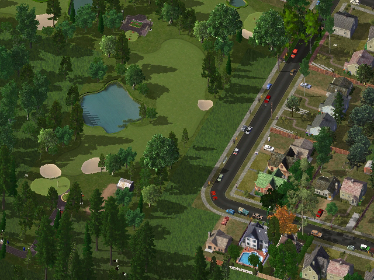
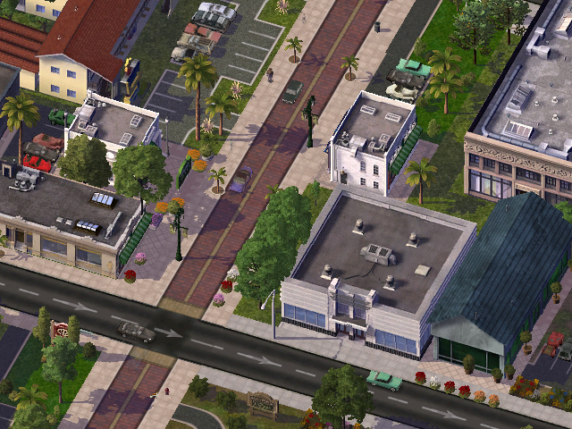
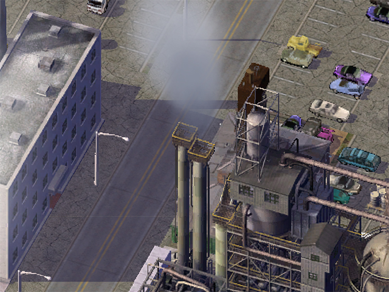
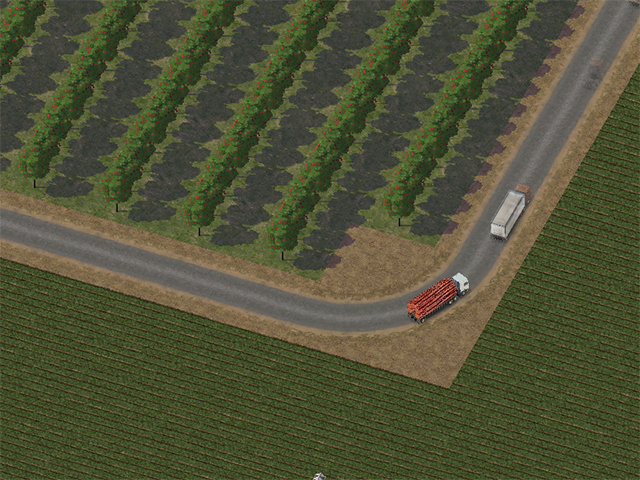
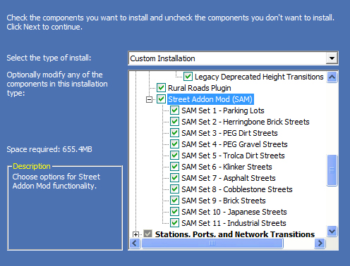
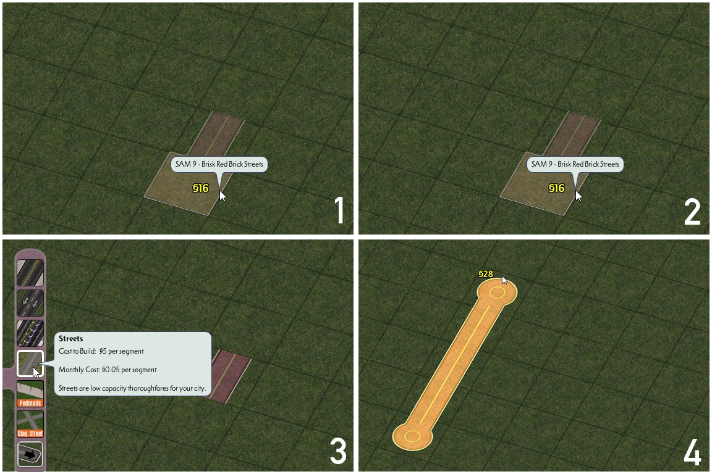
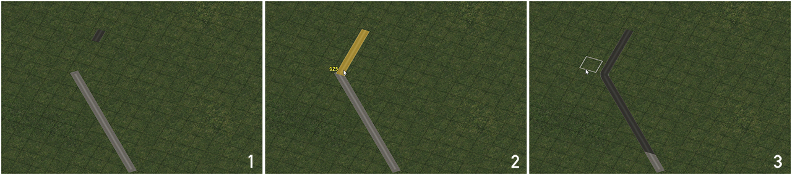
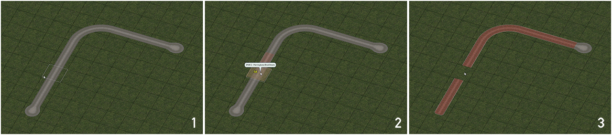
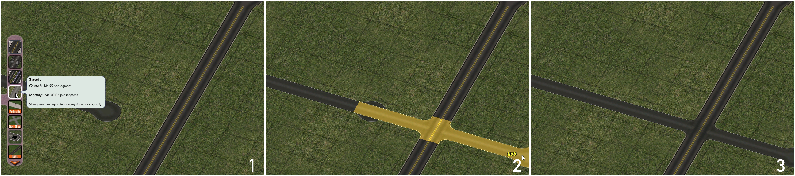
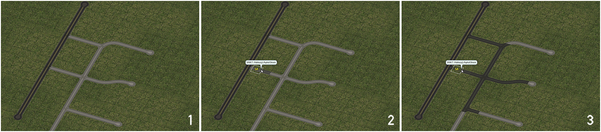

The Street Addon Mod (SAM) is a plugin which uses Starter Piece technology to add texture variants of the Street network. These variants also support (as appropriate) many of the same features as the base Street network, including support for the NAM's Diagonal Streets Plugin and Wide-Radius and Multi-Radius Curves.
  
To install the Street Addon Mod in its entirety, simply select the "Street Addon Mod" box under the "NAM Networks and Network Expansions" section of Custom Installation. The "Networks and Traffic Simulator" and "Complete Standard Installation" preset options will also install the SAM by default. If one wishes to only install specific SAM override networks, clicking the "+" next to the "Street Addon Mod" box will expand the options, and allow one to select or deselect each network.
The Street Addon Mod includes a total of 11 different Street-based override networks.
- SAM 1 - Parking Lots (Original Base by Pegasus)
- SAM 2 - Herringbone Streets (Original Base by ardecila)
- SAM 3 - PEG Dirt Streets (Original Base by Pegasus)
- SAM 4 - PEG Gravel Streets (Original Base by Pegasus)
- SAM 5 - trolca Dirt Streets (Original Base by trolca)
- SAM 6 - Klinker Streets (Original Base by squidi and jplumbley)
- SAM 7 - Asphalt Streets (Original Base by Heblem [formerly Hableurg])
- SAM 8 - Cobblestone Streets (Original Base by xannepan)
- SAM 9 - Brick Streets (Original Base by JosefBrisko135 and ScruffyDeluxe)
- SAM 10 - Japanese Streets (Original Base by moonlinght)
- SAM 11 - Industrial Streets (Original Base by mgb204)
Each override network is initiated by first placing the appropriate Starter Piece (all SAM Starter Pieces are found under the Street Addon Mod button on the Roads menu), and then dragging the Street network through the Starter Piece. This process is shown below.
{kind=link}
With the exception of SAM 1, the Parking Lots set, all SAM networks can go diagonal, with SAM overrides continuing through the NAM's Diagonal Street Plugin, provided one is using either the FLEX/Helper Pieces or the Draggable Method. (The Diagonal Street Fillers, as static puzzle pieces, cannot carry overrides.) The process is shown below.
{kind=link}
All SAM Sets, with the exception of SAM 1, can also override the NAM's Draggable Wide-Radius Curves for the Street network, simply by dragging the SAM network up to the edge of the curve, or drawing the pattern while continuing a SAM override. This process is shown below:
{kind=link}
For quick reference, the patterns for the Draggable Wide-Radius Curves for the Street network are shown below:

All networks, including SAM 1, also support the default sharp 90° bend.
(Older, static puzzle piece curves for some SAM sets can also be found in the Rural Roads Plugin (RuRP), and will be found under the Rural Roads button on the Roads menu.)
Intersections and Transitions with Other Networks
With supported networks--including Roads, One-Way Roads, Avenues, and Rails (including all Rail-based override networks*)--intersections and crossings can simply be built by dragging the overridden Street network through the network, just as one would with any other draggable network. Supported networks allow for crossings in all possible permutations of orthogonal and diagonal networks. (The High Speed Rail override network also allows orthogonal x orthogonal crossings of select SAM networks via static puzzle pieces.)
{kind=link}
In addition, it is possible to transition to the Road, One-Way Road, or Avenue network by simply dragging to connect one of these networks to the SAM Network.
SAM Set 1 (the Parking Lots) are a special case. They can intersect or transition to other networks in a clean visual manner due to how they dovetail with the base Street network, but technically cannot form intersections or transitions. The overrides will not continue beyond the intersection, unlike what occurs with all the other SAM networks.
SAM Interaction with the Street Network
SAM Overrides are pervasive. The presence of a SAM Starter Piece will cause all Streets with exposure to the SAM Street--including those that intersect it--to also be overridden. As such, it is not possible to create an intersection between a SAM Street and a Maxis Street, or between two different SAM types.
{kind=link}
Transitions between two SAM Sets can be approximated by placing two different Starter Pieces back to back, or by quickly transitioning from SAM -> Road -> Street, which breaks the override, though care should be taken even in these cases. Attempting to drag two SAM Sets into one another will simply result in a "tug-of-war" between the two sets, which can have unpredictable and unstable results.
*(Rail-based override networks include Single-Track Rail (STR) in both Maxis Rail and RealRailway (RRW) forms, plus the L1 and L2 Draggable Elevated RealRailway Viaducts.)
Select SAM sets include bridge support. To access the SAM's bridge options, one should simply drag the Street network across the body of water (or deep canyon) wishes to cross, at which point the SAM bridges will show up among the Street options.
The base Street network does NOT support tunnels, and accordingly, neither do any of the SAM's Street-based override networks. While certain slope settings may permit a tunnel to appear, it will be completely non-functional, due to hardcoded limitations that prevent traffic from using it. There is no known solution to this limitation at present. The only possible workaround at present is to transition to another network that does support tunnels.
Capabilities of Each Network
KEY
| Yes | This particular feature can be constructed, with minimal (if any) limitations. |
| Partial Support | This particular feature can be constructed, but not in all instances. Details will be given as to what is/is not possible. Partial support may be for intentional design reasons (such as realism or general unfeasibility), or simply because the feature has not been fully developed. |
| Limited Support | This particular feature can be constructed, but only in extremely limited circumstances. Instances that are possible may be listed, insofar as it is possible. Use at your own risk. |
| No Support | This particular feature cannot be constructed. This restriction could be for intentional design reasons (such as realism, or general unfeasibility), or simply because it has not yet been developed. |
ADDITIONAL NOTES
OxO: OxO stands for "orthogonal x orthogonal", and refers to a situation where both networks are orthogonal (in a straight line) along the game's grid, intersecting perpendicularly (at 90° angles at all corners)
OxD: OxD stands for "orthogonal x diagonal", and refers to a situation where the given network is orthogonal (in a straight line) along the game's grid, and the cross network is diagonal (running at a 45° angle).
DxO: DxO stands for "diagonal x orthogonal", and refers to a situation where the base network is diagonal (running at a 45° angle), and the cross network is orthogonal (in a straight line) along the game's grid.
DxD: DxD stands for "diagonal x diagonal", and refers to a situation where both networks are diagonal (running at a 45° angle) along the game's grid, intersecting perpendicularly (at 90° angles at all corners)
| Network | Diagonal Support | Draggable At-Grade Intersections/Crossings with Other Streets | Draggable At-Grade Intersections/Crossings with Road, One-Way Road, Avenue, Rails | Draggable At-Grade Intersections/Crossings with Other Networks | Draggable Transitions to Road, One-Way Road, and Avenue | Draggable Wide-Radius Curve Support | Bridges over Water | Tunnels |
|---|---|---|---|---|---|---|---|---|
| SAM 1 | No | No | Technically No Override breaks, but results work visually |
No | Technically No Override breaks, but results work visually |
No | No | No |
| SAM 2 | Yes | No | Yes | No (OxO PP for HSR) | Yes | Yes | Yes | No |
| SAM 3 | Yes | No | Yes | No (OxO PP for HSR) | Yes | Yes | Yes | No |
| SAM 4 | Yes | No | Yes | No (OxO PP for HSR) | Yes | Yes | Yes | No |
| SAM 5 | Yes | No | Yes | No (OxO PP for HSR) | Yes | Yes | Yes | No |
| SAM 6 | Yes | No | Yes | No | Yes | Yes | No | No |
| SAM 7 | Yes | No | Yes | No (OxO PP for HSR) | Yes | Yes | Yes | No |
| SAM 8 | Yes | No | Yes | No (OxO PP for HSR) | Yes | Yes | Yes | No |
| SAM 9 | Yes | No | Yes | No (OxO PP for HSR) | Yes | Yes | Yes | No |
| SAM 10 | Yes | No | Yes | No | Yes | Yes | No | No |
| SAM 11 | Yes | No | Yes | No | Yes | Yes | No | No |
- Attempting to intersect a SAM override network with another NAM override network that does not support SAM crossings may de-stabilize both overrides, causing them to alternate which override is broken with clickaround.
- Attempting to intersect two SAM types, or transition directly between them will cause override instability.
- Attempting to build multiple Draggable Wide-Radius Curves and/or intersections directly adjacent to one another may break SAM overrides, causing reversion to Street.
For technical support and information on new features coming to the Street Addon Mod in future releases, please check out the official SAM - Street Addon Mod thread on the forum at SimCity 4 Devotion.